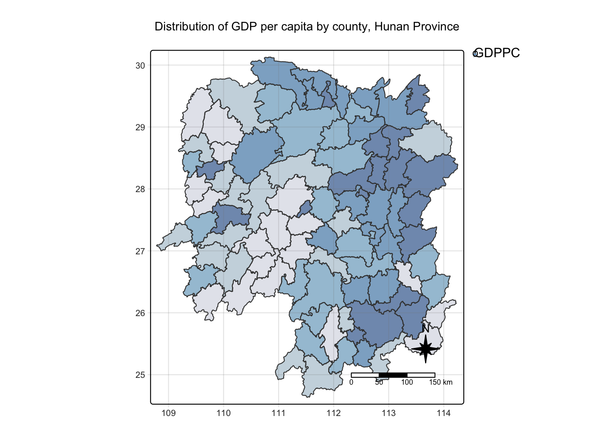
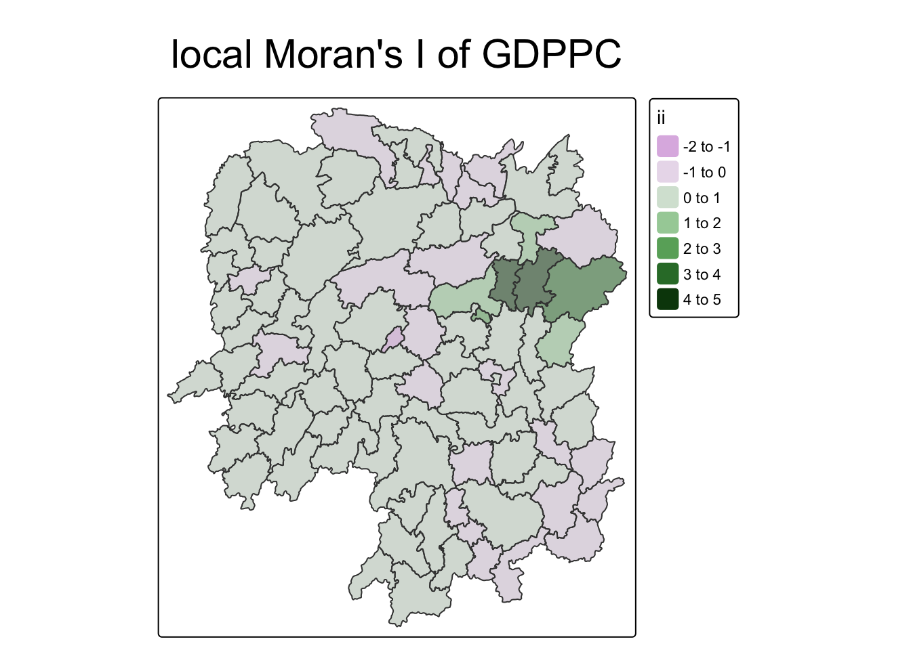
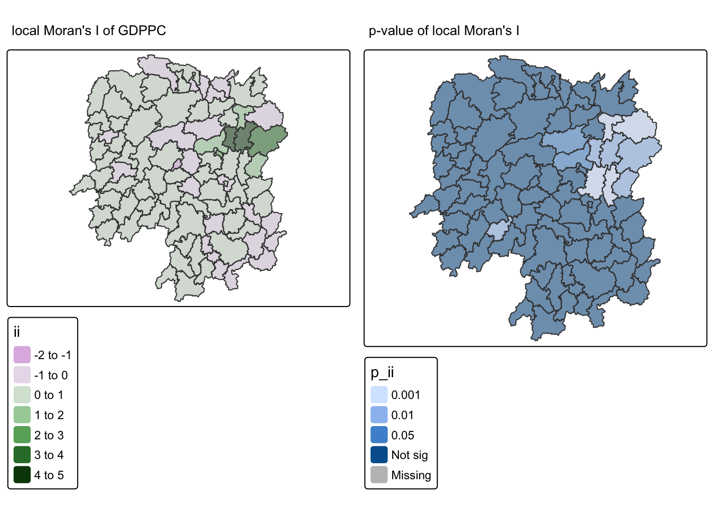
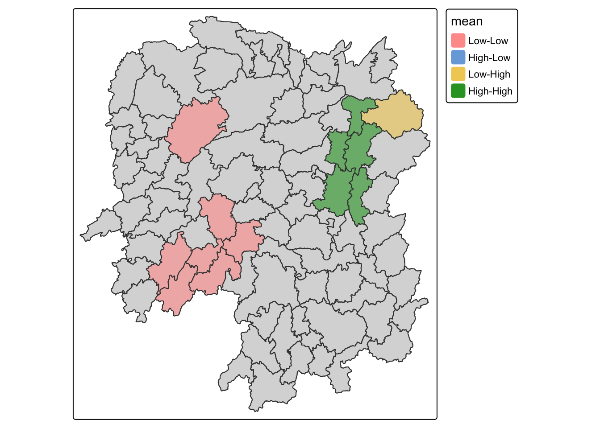
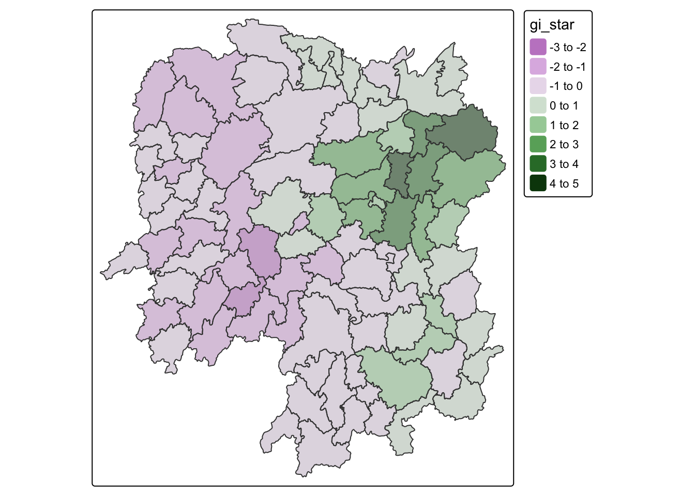
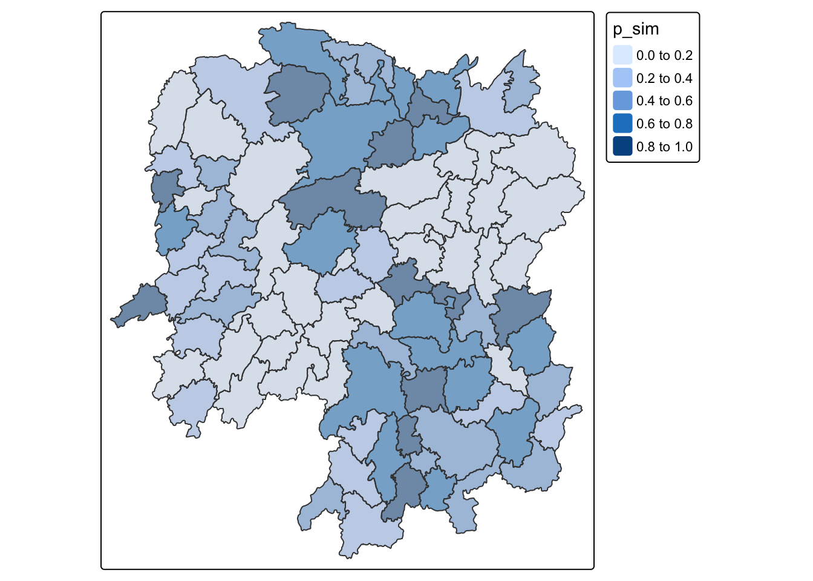
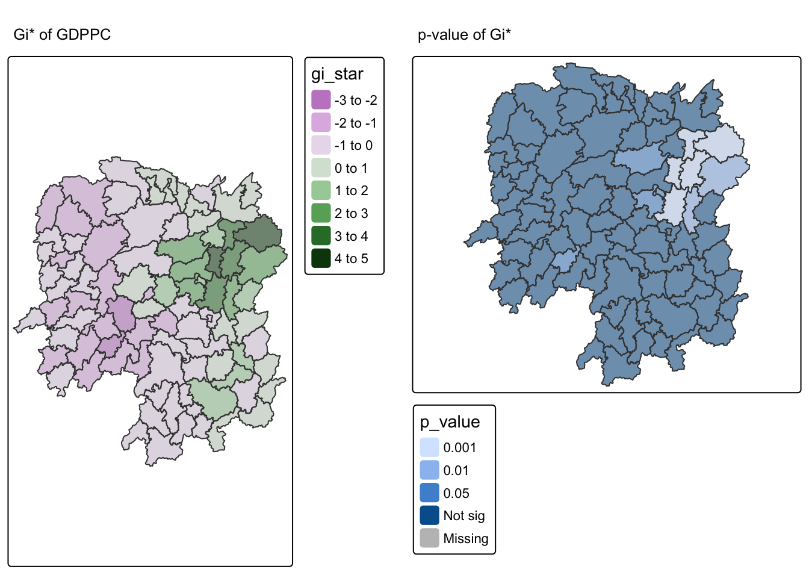
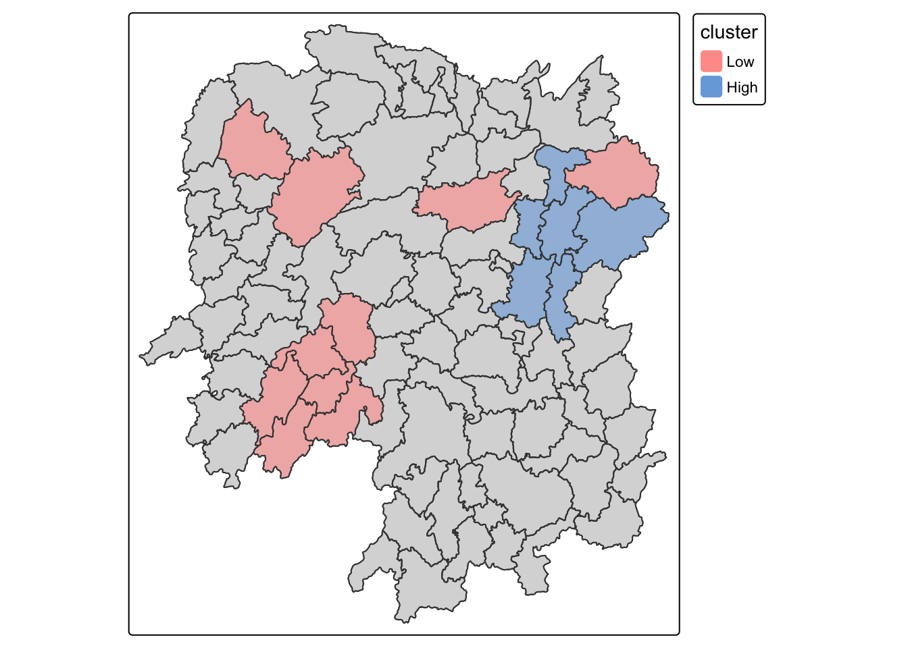

pacman::p_load(sf, sfdep, tmap, tidyverse)In-class Exercise 5a: Global and Local Measures of Spatial Autocorrelation using sfdep methods
1 Measures of Spatial Autocorrelation: sfdep methods
1.1 Overview
Introducing sfdep:
sfdep creates an sf and tidyverse friendly interface to the package as well as introduces new functionality that is not present in spdep.
sfdep utilizes list columns extensively to make this interface possible.”
1.2 Getting started
1.2.1 Installing and Loading the R Packages
Four R packages will be used for this in-class exercise, they are: sf, sfdep, tmap and tidyverse.
1.3 The data
For the purpose of this in-class exercise, the Hunan data sets will be used. There are two data sets in this use case, they are:
Hunan, a geospatial data set in ESRI shapefile format, and
Hunan_2012, an attribute data set in csv format.
hunan <- st_read(dsn = "/Users/cktan/Desktop/SMU/01_Geospatial Analytics (ISSS626)/Hands-on_Ex/Hands-on_Ex05/data/geospatial",
layer = "Hunan")Reading layer `Hunan' from data source
`/Users/cktan/Desktop/SMU/01_Geospatial Analytics (ISSS626)/Hands-on_Ex/Hands-on_Ex05/data/geospatial'
using driver `ESRI Shapefile'
Simple feature collection with 88 features and 7 fields
Geometry type: POLYGON
Dimension: XY
Bounding box: xmin: 108.7831 ymin: 24.6342 xmax: 114.2544 ymax: 30.12812
Geodetic CRS: WGS 841.4 Importing Attribute Table
Import Hunan_2012.csv into R environment as an tibble data frame.
hunan2012 <- read_csv("/Users/cktan/Desktop/SMU/01_Geospatial Analytics (ISSS626)/Hands-on_Ex/Hands-on_Ex05/data/aspatial/Hunan_2012.csv")Rows: 88 Columns: 29
── Column specification ────────────────────────────────────────────────────────
Delimiter: ","
chr (2): County, City
dbl (27): avg_wage, deposite, FAI, Gov_Rev, Gov_Exp, GDP, GDPPC, GIO, Loan, ...
ℹ Use `spec()` to retrieve the full column specification for this data.
ℹ Specify the column types or set `show_col_types = FALSE` to quiet this message.1.5 Combining both data frame by using left join
hunan_GDPPC <- left_join(hunan, hunan2012) %>%
select(1:4, 7, 15)Joining with `by = join_by(County)`
Note
For the purpose of this exercise, we only retain column 1 to 4, column 7 and column 15. You should examine the output sf data.frame to learn know what are these fields.
Important
In order to retain the geospatial properties, the left data frame must the sf data.frame (i.e. hunan)
1.6 Plotting a choropleth map
Plot a choropleth map showing the distribution of GDPPC of Hunan Province.
tmap_mode("plot")ℹ tmap mode set to "plot".tm_shape(hunan_GDPPC) +
tm_fill("GDPPC",
style = "quantile",
palette = "Blues",
title = "GDPPC") +
tm_layout(main.title = "Distribution of GDP per capita by county, Hunan Province",
main.title.position = "center",
main.title.size = 1.2,
legend.height = 0.45,
legend.width = 0.35,
frame = TRUE) +
tm_borders(alpha = 0.5) +
tm_compass(type="8star", size = 2) +
tm_scale_bar() +
tm_grid(alpha =0.2)
── tmap v3 code detected ───────────────────────────────────────────────────────
[v3->v4] `tm_fill()`: instead of `style = "quantile"`, use fill.scale =
`tm_scale_intervals()`.
ℹ Migrate the argument(s) 'style', 'palette' (rename to 'values') to
'tm_scale_intervals(<HERE>)'[v3->v4] `tm_fill()`: migrate the argument(s) related to the legend of the
visual variable `fill` namely 'title' to 'fill.legend = tm_legend(<HERE>)'[v3->v4] `tm_layout()`: use `tm_title()` instead of `tm_layout(main.title = )`[v3->v4] `tm_borders()`: use 'fill' for the fill color of polygons/symbols
(instead of 'col'), and 'col' for the outlines (instead of 'border.col').[v3->v4] `tm_borders()`: use `fill_alpha` instead of `alpha`.! `tm_scale_bar()` is deprecated. Please use `tm_scalebar()` instead.[cols4all] color palettes: use palettes from the R package cols4all. Run
`cols4all::c4a_gui()` to explore them. The old palette name "Blues" is named
"brewer.blues"Multiple palettes called "blues" found: "brewer.blues", "matplotlib.blues". The first one, "brewer.blues", is returned.
[plot mode] fit legend/component: Some legend items or map compoments do not
fit well, and are therefore rescaled.
ℹ Set the tmap option `component.autoscale = FALSE` to disable rescaling.
1.7 Global Measures of Spatial Association
1.7.1 Step 1: Deriving Queen’s contiguity weights: sfdep methods
wm_q <- hunan_GDPPC %>%
mutate(nb = st_contiguity(geometry),
wt = st_weights(nb,
style = "W"),
.before = 1) Notice that st_weights() provides tree arguments, they are:
- nb: A neighbor list object as created by st_neighbors().
- style: Default “W” for row standardized weights. This value can also be “B”, “C”, “U”, “minmax”, and “S”. B is the basic binary coding, W is row standardised (sums over all links to n), C is globally standardised (sums over all links to n), U is equal to C divided by the number of neighbours (sums over all links to unity), while S is the variance-stabilizing coding scheme proposed by Tiefelsdorf et al. 1999, p. 167-168 (sums over all links to n).
- allow_zero: If TRUE, assigns zero as lagged value to zone without neighbors.
1.7.2 The wm_q
wm_qSimple feature collection with 88 features and 8 fields
Geometry type: POLYGON
Dimension: XY
Bounding box: xmin: 108.7831 ymin: 24.6342 xmax: 114.2544 ymax: 30.12812
Geodetic CRS: WGS 84
First 10 features:
nb
1 2, 3, 4, 57, 85
2 1, 57, 58, 78, 85
3 1, 4, 5, 85
4 1, 3, 5, 6
5 3, 4, 6, 85
6 4, 5, 69, 75, 85
7 67, 71, 74, 84
8 9, 46, 47, 56, 78, 80, 86
9 8, 66, 68, 78, 84, 86
10 16, 17, 19, 20, 22, 70, 72, 73
wt
1 0.2, 0.2, 0.2, 0.2, 0.2
2 0.2, 0.2, 0.2, 0.2, 0.2
3 0.25, 0.25, 0.25, 0.25
4 0.25, 0.25, 0.25, 0.25
5 0.25, 0.25, 0.25, 0.25
6 0.2, 0.2, 0.2, 0.2, 0.2
7 0.25, 0.25, 0.25, 0.25
8 0.1428571, 0.1428571, 0.1428571, 0.1428571, 0.1428571, 0.1428571, 0.1428571
9 0.1666667, 0.1666667, 0.1666667, 0.1666667, 0.1666667, 0.1666667
10 0.125, 0.125, 0.125, 0.125, 0.125, 0.125, 0.125, 0.125
NAME_2 ID_3 NAME_3 ENGTYPE_3 County GDPPC
1 Changde 21098 Anxiang County Anxiang 23667
2 Changde 21100 Hanshou County Hanshou 20981
3 Changde 21101 Jinshi County City Jinshi 34592
4 Changde 21102 Li County Li 24473
5 Changde 21103 Linli County Linli 25554
6 Changde 21104 Shimen County Shimen 27137
7 Changsha 21109 Liuyang County City Liuyang 63118
8 Changsha 21110 Ningxiang County Ningxiang 62202
9 Changsha 21111 Wangcheng County Wangcheng 70666
10 Chenzhou 21112 Anren County Anren 12761
geometry
1 POLYGON ((112.0625 29.75523...
2 POLYGON ((112.2288 29.11684...
3 POLYGON ((111.8927 29.6013,...
4 POLYGON ((111.3731 29.94649...
5 POLYGON ((111.6324 29.76288...
6 POLYGON ((110.8825 30.11675...
7 POLYGON ((113.9905 28.5682,...
8 POLYGON ((112.7181 28.38299...
9 POLYGON ((112.7914 28.52688...
10 POLYGON ((113.1757 26.82734...1.7.3 Computing Global Moran’ I
In the code chunk below, global_moran() function is used to compute the Moran’s I value. Different from spdep package, the output is a tibble data.frame.
moranI <- global_moran(wm_q$GDPPC,
wm_q$nb,
wm_q$wt)
glimpse(moranI)List of 2
$ I: num 0.301
$ K: num 7.641.7.4 Performing Global Moran’sI test
In general, Moran’s I test will be performed instead of just computing the Moran’s I statistics. With sfdep package, Moran’s I test can be performed by using global_moran_test() as shown in the code chunk below.
global_moran_test(wm_q$GDPPC,
wm_q$nb,
wm_q$wt)
Moran I test under randomisation
data: x
weights: listw
Moran I statistic standard deviate = 4.7351, p-value = 1.095e-06
alternative hypothesis: greater
sample estimates:
Moran I statistic Expectation Variance
0.300749970 -0.011494253 0.004348351
Tip
- The default for
alternativeargument is “two.sided”. Other supported arguments are “greater” or “less”. randomization, and
- By default the
randomizationargument is TRUE. If FALSE, under the assumption of normality.
1.7.5 Performing Global Moran’I permutation test
In practice, Monte carlo simulation should be used to perform the statistical test. For sfdep, it is supported by globel_moran_perm()
1.7.5.1 Step 1
It is always a good practice to use set.seed() before performing simulation. This is o ensure that the computation is reproducible.
set.seed(1234)1.7.5.2 Step 2
Next, global_moran_perm() is used to perform Monte Carlo simulation.
global_moran_perm(wm_q$GDPPC,
wm_q$nb,
wm_q$wt,
nsim = 99)
Monte-Carlo simulation of Moran I
data: x
weights: listw
number of simulations + 1: 100
statistic = 0.30075, observed rank = 100, p-value < 2.2e-16
alternative hypothesis: two.sided1.7.6 The report
The statistical report on previous tab shows that the p-value is smaller than alpha value of 0.05. Hence, we have enough statistical evidence to reject the null hypothesis that the spatial distribution of GPD per capita are resemble random distribution (i.e. independent from spatial). Because the Moran’s I statistics is greater than 0. We can infer that the spatial distribution shows sign of clustering.
The numbers of simulation is alway equal to nsim + 1. This mean in nsim = 99. This mean 100 simulation will be performed.
1.8 LISA map
LISA map is a categorical map showing outliers and clusters. There are two types of outliers namely: High-Low and Low-High outliers. Likewise, there are two type of clusters namely: High-High and Low-Low cluaters. In fact, LISA map is an interpreted map by combining local Moran’s I of geographical areas and their respective p-values.
1.8.1 Computing local Moran’s I
In this section, you will learn how to compute Local Moran’s I of GDPPC at county level by using local_moran() of sfdep package.
lisa <- wm_q %>%
mutate(local_moran = local_moran(
GDPPC, nb, wt, nsim = 99),
.before = 1) %>%
unnest(local_moran)
lisaSimple feature collection with 88 features and 20 fields
Geometry type: POLYGON
Dimension: XY
Bounding box: xmin: 108.7831 ymin: 24.6342 xmax: 114.2544 ymax: 30.12812
Geodetic CRS: WGS 84
# A tibble: 88 × 21
ii eii var_ii z_ii p_ii p_ii_sim p_folded_sim skewness
<dbl> <dbl> <dbl> <dbl> <dbl> <dbl> <dbl> <dbl>
1 -0.00147 0.00177 0.000418 -0.158 0.874 0.82 0.41 -0.812
2 0.0259 0.00641 0.0105 0.190 0.849 0.96 0.48 -1.09
3 -0.0120 -0.0374 0.102 0.0796 0.937 0.76 0.38 0.824
4 0.00102 -0.0000349 0.00000437 0.506 0.613 0.64 0.32 1.04
5 0.0148 -0.00340 0.00165 0.449 0.654 0.5 0.25 1.64
6 -0.0388 -0.00339 0.00545 -0.480 0.631 0.82 0.41 0.614
7 3.37 -0.198 1.41 3.00 0.00266 0.08 0.04 1.46
8 1.56 -0.265 0.804 2.04 0.0417 0.08 0.04 0.459
9 4.42 0.0450 1.79 3.27 0.00108 0.02 0.01 0.746
10 -0.399 -0.0505 0.0859 -1.19 0.234 0.28 0.14 -0.685
# ℹ 78 more rows
# ℹ 13 more variables: kurtosis <dbl>, mean <fct>, median <fct>, pysal <fct>,
# nb <nb>, wt <list>, NAME_2 <chr>, ID_3 <int>, NAME_3 <chr>,
# ENGTYPE_3 <chr>, County <chr>, GDPPC <dbl>, geometry <POLYGON [°]>1.8.2 Visualising local Moran’s I
tmap_mode("plot")ℹ tmap mode set to "plot".tm_shape(lisa) +
tm_fill("ii") +
tm_borders(alpha = 0.5) +
tm_view(set.zoom.limits = c(6,8)) +
tm_layout(
main.title = "local Moran's I of GDPPC",
main.title.size = 2)
── tmap v3 code detected ───────────────────────────────────────────────────────
[v3->v4] `tm_borders()`: use `fill_alpha` instead of `alpha`.[v3->v4] `tm_view()`: use set_zoom_limits instead of set.zoom.limits[v3->v4] `tm_layout()`: use `tm_title()` instead of `tm_layout(main.title = )`[scale] tm_polygons:() the data variable assigned to 'fill' contains positive and negative values, so midpoint is set to 0. Set 'midpoint = NA' in 'fill.scale = tm_scale_intervals(<HERE>)' to use all visual values (e.g. colors)
1.8.3 Visualising p-value of local Moran’s I
In the code chunk below, tmap functions are used prepare a choropleth map by using value in the p_ii_sim field.
tmap_mode("plot")ℹ tmap mode set to "plot".tm_shape(lisa) +
tm_fill("p_ii_sim") +
tm_borders(alpha = 0.5) +
tm_layout(main.title = "p-value of local Moran's I",
main.title.size = 2)
── tmap v3 code detected ───────────────────────────────────────────────────────
[v3->v4] `tm_borders()`: use `fill_alpha` instead of `alpha`.[v3->v4] `tm_layout()`: use `tm_title()` instead of `tm_layout(main.title = )`
Warning
For p-values, the appropriate classification should be 0.001, 0.01, 0.05 and not significant instead of using default classification scheme.
1.8.4 Visualising local Moran’s I and p-value
For effective comparison, it will be better for us to plot both maps next to each other.
tmap_mode("plot")ℹ tmap mode set to "plot".map1 <- tm_shape(lisa) +
tm_fill("ii") +
tm_borders(alpha = 0.5) +
tm_view(set.zoom.limits = c(6,8)) +
tm_layout(main.title = "local Moran's I of GDPPC",
main.title.size = 0.8)
── tmap v3 code detected ───────────────────────────────────────────────────────
[v3->v4] `tm_borders()`: use `fill_alpha` instead of `alpha`.[v3->v4] `tm_view()`: use set_zoom_limits instead of set.zoom.limits[v3->v4] `tm_layout()`: use `tm_title()` instead of `tm_layout(main.title = )`map2 <- tm_shape(lisa) +
tm_fill("p_ii",
breaks = c(0, 0.001, 0.01, 0.05, 1),
labels = c("0.001", "0.01", "0.05", "Not sig")) +
tm_borders(alpha = 0.5) +
tm_layout(main.title = "p-value of local Moran's I",
main.title.size = 0.8)[v3->v4] `tm_borders()`: use `fill_alpha` instead of `alpha`.
[v3->v4] `tm_layout()`: use `tm_title()` instead of `tm_layout(main.title = )`tmap_arrange(map1, map2, ncol = 2)[scale] tm_polygons:() the data variable assigned to 'fill' contains positive and negative values, so midpoint is set to 0. Set 'midpoint = NA' in 'fill.scale = tm_scale_intervals(<HERE>)' to use all visual values (e.g. colors)
1.8.5 Plotting LISA map
In lisa sf data.frame, we can find three fields contain the LISA categories. They are mean, median and pysal. In general, classification in mean will be used as shown in the code chunk below.
lisa_sig <- lisa %>%
filter(p_ii_sim < 0.05)
tmap_mode("plot")ℹ tmap mode set to "plot".tm_shape(lisa) +
tm_polygons() +
tm_borders(alpha = 0.5) +
tm_shape(lisa_sig) +
tm_fill("mean") +
tm_borders(alpha = 0.4)
── tmap v3 code detected ───────────────────────────────────────────────────────
[v3->v4] `tm_borders()`: use `fill_alpha` instead of `alpha`.[v3->v4] `tm_borders()`: use `fill_alpha` instead of `alpha`.
1.9 Hot Spot and Cold Spot Area Analysis (HCSA)
HCSA uses spatial weights to identify locations of statistically significant hot spots and cold spots in an spatially weighted attribute that are in proximity to one another based on a calculated distance. The analysis groups features when similar high (hot) or low (cold) values are found in a cluster. The polygon features usually represent administration boundaries or a custom grid structure.
1.9.1 Computing local Gi* statistics
As usual, we will need to derive a spatial weight matrix before we can compute local Gi* statistics. Code chunk below will be used to derive a spatial weight matrix by using sfdep functions and tidyverse approach.
wm_idw <- hunan_GDPPC %>%
mutate(nb = include_self(
st_contiguity(geometry)),
wts = st_inverse_distance(nb,
geometry,
scale = 1,
alpha = 1),
.before = 1)! Polygon provided. Using point on surface.Warning: There was 1 warning in `stopifnot()`.
ℹ In argument: `wts = st_inverse_distance(nb, geometry, scale = 1, alpha = 1)`.
Caused by warning in `st_point_on_surface.sfc()`:
! st_point_on_surface may not give correct results for longitude/latitude dataGi* and local Gi* are distance-based spatial statistics. Hence, distance methods instead of contiguity methods should be used to derive the spatial weight matrix.
Since we are going to compute Gi* statistics,
include_self()is used.
1.9.2 Computing local Gi* statistics
Now, we will compute the local Gi* by using the code chunk below.
HCSA <- wm_idw %>%
mutate(local_Gi = local_gstar_perm(
GDPPC, nb, wts, nsim = 99),
.before = 1) %>%
unnest(local_Gi)
HCSASimple feature collection with 88 features and 18 fields
Geometry type: POLYGON
Dimension: XY
Bounding box: xmin: 108.7831 ymin: 24.6342 xmax: 114.2544 ymax: 30.12812
Geodetic CRS: WGS 84
# A tibble: 88 × 19
gi_star cluster e_gi var_gi std_dev p_value p_sim p_folded_sim skewness
<dbl> <fct> <dbl> <dbl> <dbl> <dbl> <dbl> <dbl> <dbl>
1 0.261 Low 0.00126 1.07e-7 0.283 7.78e-1 0.66 0.33 0.783
2 -0.276 Low 0.000969 4.76e-8 -0.123 9.02e-1 0.98 0.49 0.713
3 0.00573 High 0.00156 2.53e-7 -0.0571 9.54e-1 0.78 0.39 0.972
4 0.528 High 0.00155 2.97e-7 0.321 7.48e-1 0.56 0.28 0.942
5 0.466 High 0.00137 2.76e-7 0.386 7.00e-1 0.52 0.26 1.32
6 -0.445 High 0.000992 7.08e-8 -0.588 5.57e-1 0.68 0.34 0.692
7 2.99 High 0.000700 4.05e-8 3.13 1.74e-3 0.04 0.02 0.975
8 2.04 High 0.00152 1.58e-7 1.77 7.59e-2 0.16 0.08 1.26
9 4.42 High 0.00130 1.18e-7 4.22 2.39e-5 0.02 0.01 1.20
10 1.21 Low 0.00175 1.25e-7 1.49 1.36e-1 0.18 0.09 0.408
# ℹ 78 more rows
# ℹ 10 more variables: kurtosis <dbl>, nb <nb>, wts <list>, NAME_2 <chr>,
# ID_3 <int>, NAME_3 <chr>, ENGTYPE_3 <chr>, County <chr>, GDPPC <dbl>,
# geometry <POLYGON [°]>1.9.3 Visualising Gi*
In the code chunk below, tmap functions are used to plot the local Gi* (i.e. gi_star) at the province level.
tmap_mode("plot")ℹ tmap mode set to "plot".tm_shape(HCSA) +
tm_fill("gi_star") +
tm_borders(alpha = 0.5) +
tm_view(set.zoom.limits = c(6,8))
── tmap v3 code detected ───────────────────────────────────────────────────────
[v3->v4] `tm_borders()`: use `fill_alpha` instead of `alpha`.[v3->v4] `tm_view()`: use set_zoom_limits instead of set.zoom.limits[scale] tm_polygons:() the data variable assigned to 'fill' contains positive and negative values, so midpoint is set to 0. Set 'midpoint = NA' in 'fill.scale = tm_scale_intervals(<HERE>)' to use all visual values (e.g. colors)
1.9.4 Visualising p-value of HCSA
In the code chunk below, tmap functions are used to plot the p-values of local Gi* (i.e. p_sim) at the province level.
tmap_mode("plot")ℹ tmap mode set to "plot".tm_shape(HCSA) +
tm_fill("p_sim") +
tm_borders(alpha = 0.5)
── tmap v3 code detected ───────────────────────────────────────────────────────
[v3->v4] `tm_borders()`: use `fill_alpha` instead of `alpha`.
1.9.5 Visuaising local HCSA
For effective comparison, you can plot both maps next to each other as shown below.
tmap_mode("plot")ℹ tmap mode set to "plot".map1 <- tm_shape(HCSA) +
tm_fill("gi_star") +
tm_borders(alpha = 0.5) +
tm_view(set.zoom.limits = c(6,8)) +
tm_layout(main.title = "Gi* of GDPPC",
main.title.size = 0.8)
── tmap v3 code detected ───────────────────────────────────────────────────────
[v3->v4] `tm_borders()`: use `fill_alpha` instead of `alpha`.[v3->v4] `tm_view()`: use set_zoom_limits instead of set.zoom.limits[v3->v4] `tm_layout()`: use `tm_title()` instead of `tm_layout(main.title = )`map2 <- tm_shape(HCSA) +
tm_fill("p_value",
breaks = c(0, 0.001, 0.01, 0.05, 1),
labels = c("0.001", "0.01", "0.05", "Not sig")) +
tm_borders(alpha = 0.5) +
tm_layout(main.title = "p-value of Gi*",
main.title.size = 0.8)[v3->v4] `tm_borders()`: use `fill_alpha` instead of `alpha`.
[v3->v4] `tm_layout()`: use `tm_title()` instead of `tm_layout(main.title = )`tmap_arrange(map1, map2, ncol = 2)[scale] tm_polygons:() the data variable assigned to 'fill' contains positive and negative values, so midpoint is set to 0. Set 'midpoint = NA' in 'fill.scale = tm_scale_intervals(<HERE>)' to use all visual values (e.g. colors)
1.9.6 Visualising hot spot and cold spot areas
Now, we are ready to plot the significant (i.e. p-values less than 0.05) hot spot and cold spot areas by using appropriate tmap functions as shown below.
HCSA_sig <- HCSA %>%
filter(p_sim < 0.05)
tmap_mode("plot")ℹ tmap mode set to "plot".tm_shape(HCSA) +
tm_polygons() +
tm_borders(alpha = 0.5) +
tm_shape(HCSA_sig) +
tm_fill("cluster") +
tm_borders(alpha = 0.4)
── tmap v3 code detected ───────────────────────────────────────────────────────
[v3->v4] `tm_borders()`: use `fill_alpha` instead of `alpha`.[v3->v4] `tm_borders()`: use `fill_alpha` instead of `alpha`.